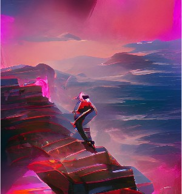
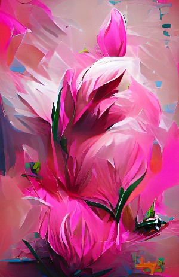
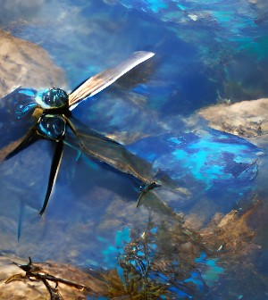

Here you can see a fantastic veiw from a high up cliff. In the style of synthwave, this artwork came from the prompt 'man on cliff'.
This artwork looks to be straight out of a fairy tale. In the festive style we have the prompt 'red winter forest'.

Here you can see a stylized painting of a flower. In the style called vibriant from a prompt 'pink flower'.
Here are some bubbles and ripples on a surface of water. In the HD style this came from the prompt 'water circles'.

This menacing looking dragonfly comes from the prompt 'blue dragonfly'. Of course in the style of Fantasy Art.
In this piece of artwork it looks like we have a heart drawn in the sand. This prompt was 'sand heart' and there was no style.